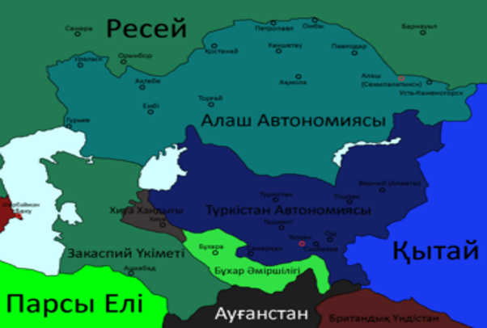
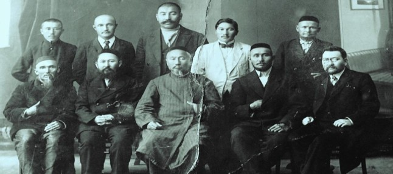
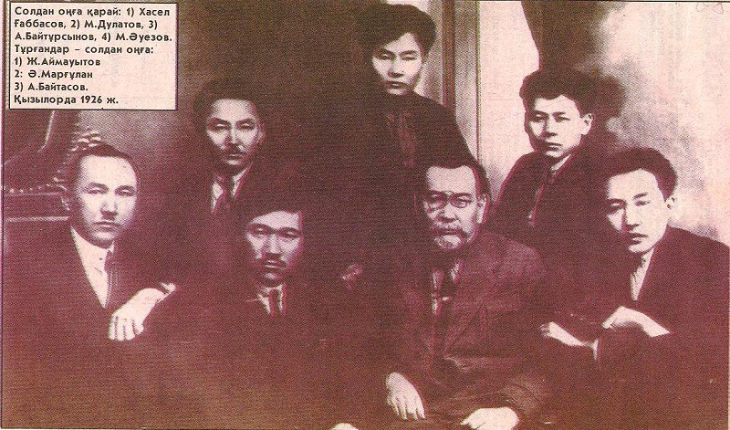
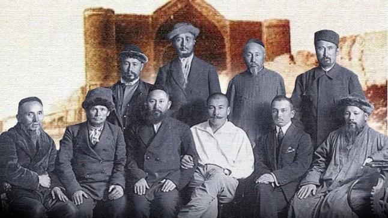
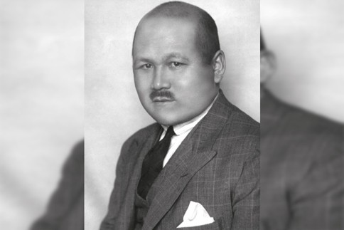
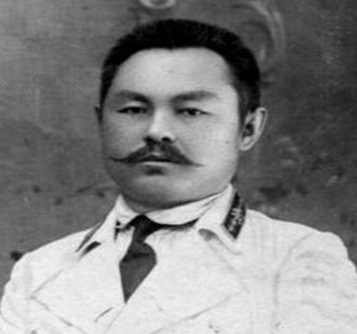

Алаш пен Түркістан (Қоқан) автономияларының нақты шекарасы патшалық тұстағы Дала және Түркістан генерал-губернаторлықтарының шекарасымен өтті. Екі автономияның нақты бөлінісі: 1. Тек Алаш автономиясына кірген аумақтар: • Семей облысы • Ақмола облысы • Торғай облысы • Орал облысы • Бөкей Ордасы 2. Тек Түркістан автономиясына кірген аумақтар: • Ферғана облысы (орталығы — Қоқан) • Самарқанд облысы • Каспий сырты облысы (Түрікменстан жері) 3. Екі автономия да өз картасына қосқан «ортақ» (даулы) аумақтар: • Сырдария облысы (Қазіргі Қызылорда, Түркістан, Жамбыл облыстары және Ташкент маңы) • Жетісу облысы (Қазіргі Алматы, Жетісу облыстары және Қырғызстанның солтүстігі) Түйін: Іс жүзінде Сырдария мен Жетісу Түркістан автономиясының бақылауында болды, бірақ Алаш бұл жерлерді өз саяси картасына ресми түрде қосып, болашақта өзіне біріктіруді талап етті.
Толық оқу (Wikipedia)
Алаш қозғалысының басты мақсаты — қазақ халқының өз өзін басқару құқығын қалпына келтіріп, Ресей империясының құрамында демократиялық, ұлттық-территориялық Алаш автономиясын (мемлекетін) құру болды. Осы бас мақсатқа жету үшін зиялылар мынадай нақты міндеттерді орындауды көздеді: • Жер мәселесі: Қазақ жерлерін сырттан келушілерге (ішкі Ресейден қоныс аударушыларға) беруді тоқтату, шұрайлы жерлерді халықтың өзіне қайтару және оны заңмен бекіту. • Дербес әскер: Ұлттық қауіпсіздікті қорғау үшін жеке Алаш милициясын (әскерін) құру. • Тіл мен мәдениет: Қазақ тілін мемлекеттік деңгейге көтеру, сот, әкімшілік және мектеп істерін ана тілінде жүргізу. • Ағартушылық: Еуропалық білім мен ұлттық құндылықтарды ұштастыра отырып, халықтың сауатын ашу, жаппай мектептер мен медреселер салу. • Заңдылық: Ресейдің Болашақ Құрылтай жиналысында қазақ елінің мүддесін заң жүзінде бекітіп, тең құқықты субъект ретінде таныту. Түйін: Алаш қайраткерлері қазақ халқын отарлық езгіден құтқарып, өркениетті, заманауи және тәуелсіз іргелі мемлекетке айналдыруды армандады.
Толық оқу (gov)
Хасел (Халел) Ғаббасов (1888–1937)
Кім: «Алаш» партиясы мен Алашорда үкіметінің көрнекті қайраткері, физик-математик, публицист.
Өмір жолы: Москов университетін бітірген. Алашорда үкіметі басшысының орынбасары болып сайланып, «Сарыарқа» газетін редакциялаған. 1918 жылы Алаш автономиясы атынан Иосиф Сталинмен телеграф арқылы ресми келіссөздер жүргізген. Репрессияға ұшырап, атылған.
Міржақып Дулатов (1885–1935)
Кім: Алаш қозғалысының көшбасшыларының бірі, ақын, жазушы, қоғам қайраткері.
Өмір жолы: Қазақ халқының ұлттық санасын оятқан «Оян, қазақ!» (1909) өлеңдер жинағының және тұңғыш қазақ романы «Бақытсыз Жамалдың» (1910) авторы. «Қазақ» газетін ұйымдастырушылардың бірі. Соловецк лагерінде қаза тапқан.
Ахмет Байтұрсынов (1872–1937)
Кім: Ұлт ұстазы, «Алаш» партиясының негізін қалаушылардың бірі, ағартушы-ғалым, әдебиеттанушы, лингвист, акын, аудармашы.
Өмір жолы: Қазақ әліпбиін (төте жазу) жасап, қазақ тіл білімі мен әдебиеттану ғылымының іргетасын қалады. «Қазақ» газетінің бас редакторы болған. Репрессия жылдарында атылған.
Мұхтар Әуезов (1897–1961)
Кім: Ұлы жазушы, драматург, қоғам қайраткері, академик, филология ғылымдарының докторы.
Өмір жолы: Әлемге танымал «Абай жолы» роман-эпопеясының авторы. Жастардың «Талап» ұйымына, Алаш идеясына белсене қатысқан. Қазақ әдебиеті мен драматургиясының дамуына өлшеусіз үлес қосты.
Жүсіпбек Аймауытов (1889–1931)
Кім: Көрнекті жазушы, драматург, публицист, қазақ психология ғылымының негізін қалаушылардың бірі.
Өмір жолы: «Ақбілек», «Қартқожа» романдарының, «Шернияз», «Ел қорғаны» драмаларының авторы. Қазақша тұңғыш «Психология» оқулығын жазған. Алаш қозғалысына белсене араласқаны үшін тұтқындалып, атылған.
Әлкей Марғұлан (1904–1985)
Кім: Ғалым-археолог, этнограф, тарихшы, филолог, академик, Қазақстан археология мектебінің негізін қалаушы.
Өмір жолы: Орталық Қазақстандағы Беғазы-Дәндібай мәдениетін ашып, зерттеген. Шоқантану, эпостану, археология салаларында іргелі еңбектер жазған.
Абдолла Байтасов (1901–1930 жылдар)
Кім: Қоғам қайраткері, тілші, редактор, әдебиетші.
Өмір жолы: Омбы мұғалімдер семинариясын бітіріп, Алаш қозғалысына қатысқан. Мағжан Жұмабаевпен бірге «Алқа» әдеби ұйымын құруға атсалысып, «Жас алаш», «Еңбекші қазақ» газеттерінде еңбек еткен. Репрессияға ұшырап, Архангельскіге жер аударылған.

Алаш зиялылары мен меценаттары — XX ғасыр басындағы ұлт-азаттық қозғалыстың қос басты тірегі. 1. Алаш зиялылары (Идея мен саясат) Бас тұлғалары: Ә. Бөкейханов, А. Байтұрсынұлы, М. Дулатов, М. Шоқай, Ә. Ермеков, Ж. және Х. Досмұхамедовтер. Рөлі: Халықтың саяси санасын оятып, ұлттық мектептер ашты, қазақ жерін қорғап, Алаш автономиясын құрудың идеялық-саяси негізін қалады. 2. Алаш меценаттары (Қаржылық қолдау) Бас тұлғалары: М. Сейітқұлов, Маман байлары, Қ. Үкібаев, Х. Ақайұлы, Ә. Ережепұлы, М. Жәкежанұлы. Рөлі: «Қазақ» газеті мен «Абай» журналын шығаруға, «Мамания» сияқты мектептер салып, оқулықтар басуға, студенттерге стипендия беруге және Алаш әскерін (милициясын) қару-жарақ, ат-көлікпен қамтамасыз етуге қаржы бөлді. Түйін: Зиялылардың идеясы мен меценаттардың қаржылай қолдауы тоғысып, тұңғыш жалпыұлттық баспасөз қалыптасты және 1917 жылы Алаш автономиясы жарияланды.
Толық оқу (e-history)
Мұстафа Шоқай(1890–1941) — көрнекті саяси қайраткер, Алаш арысы және «Біртұтас Түркістан» идеясының басты идеологы. Патша үкіметіне қарсылық: IV Мемлекеттік Думаның мұсылман фракциясында қызмет етіп, патша өкіметінің отаршылдық саясатын және 1916 жылғы көтерілісті басудағы қатыгездігін әшкереледі. Түркістан автономиясы: 1917 жылы Түркістан (Қоқан) автономиясының Үкімет төрағасы әрі Сыртқы істер министрі болып, Орталық Азия халқын біріктіруді мақсат етті. Эмиграциядағы күрес: Большевиктер автономияны талқандаған соң Еуропада (Париж, Берлин) «Жас Түркістан» журналын шығарып, Кеңес өкіметінің ашаршылығы мен «Қызыл террорын» әлемге жариялады. Ұстанымы: Екінші дүниежүзілік соғыста Нацистік Германияның ұсыныстарынан бас тартып, концлагерьлердегі тұтқын отандастарын құтқаруға күш салды. Түйін: Мұстафа Шоқай — өмірінің соңына дейін түркі жұртының бірлігі мен тәуелсіздігі жолында күрескен алғашқы халықаралық деңгейдегі қазақ дипломаты.
Толық оқу (adyrna)
Мұхамеджан Тынышбаев (1884–1937) — көрнекті қоғам және мемлекет қайраткері, Алаш қозғалысының көшбасшыларының бірі, тұңғыш қазақ инженер-теміржолшысы, тарихшы-этнограф. Негізгі өмір деректері мен қызметі: Білiмі: Санкт-Петербургтегі Императорлық II Александр атындағы жол инженерлері институтын аяқтаған (1906 ж.). Қазақ халқынан шыққан алғашқы жоғары білімді теміржол инженері. Саяси қызметі: 1907 жылы Ресей Империясының II Мемлекеттік Думасының депутаты болып сайланды. 1917 жылы Уақытша үкіметтің Түркістан комитетінің мүшесі, артынша Қоқанда жарияланған Түркістан (Қоқан) автономиясының алғашқы премьер-министрі әрі ішкі істер министрі болды. Алашорда үкіметін құруға белсене қатысып, Оқу комиссиясының мүшесі және ғылыми-зерттеу жұмыстарының ұйымдастырушысы болды. Инженерлік еңбегі: Түркістан-Сібір (Түркісиб) теміржол магистралін жобалау мен салуға үлкен үлес қосты. Сонымен қатар Жетісу, Семей теміржол желілерін тартып, инженерлік инфрақұрылымды дамытуға еңбек сіңірді. Ғылыми мұрасы: Қазақ халқының шежіресі мен тарихын жүйелеп, 1925 жылы Ташкентте «Қазақ-қырғыз халқының тарихына қатысты материалдар» атты іргелі еңбегін басып шығарды. Репрессия: 1930 жылдары саяси қуғын-сүргінге ұшырап, 1937 жылы тұтқындалып, ату жазасына кесілді (1959 жылы толық ақталды).
Толық оқу (adebiportal)